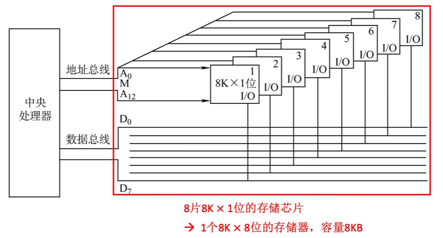
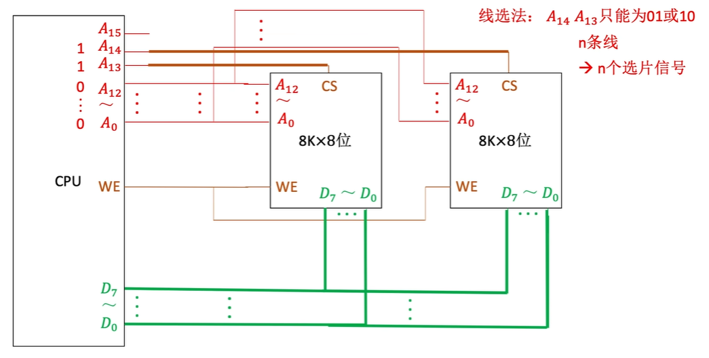
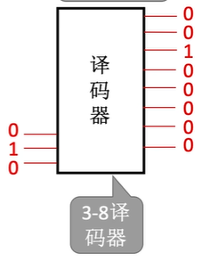
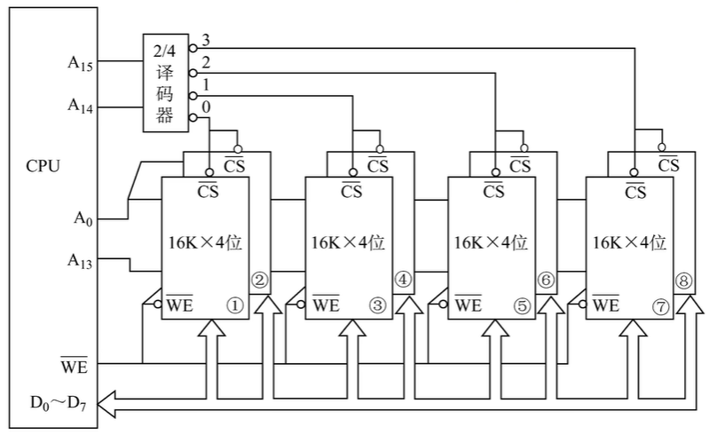
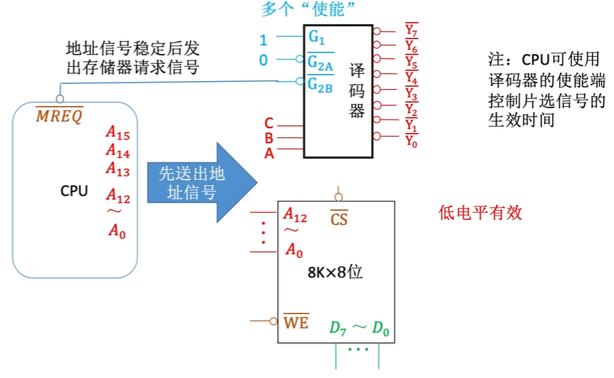

主存储器与CPU的连接
1. 知识总览
1.1 单块存储芯片与CPU的连接
存储芯片与CPU之间的连接是计算机体系结构中的基础。这种连接确保了CPU能够高效地访问和操作存储器中的数据。
接口类型：
- 数据接口（Data Interface）： 通过数据总线与CPU连接，负责传输CPU与存储器之间的数据。数据总线的宽度决定了每次传输的数据量（例如，8位、16位、32位或64位）。
- 地址接口（Address Interface）： 通过地址总线与CPU连接，传输CPU希望访问的存储单元的物理地址。地址总线的宽度决定了CPU能够寻址的存储空间大小（例如，13位地址线可以寻址 $2^{13}$ = 8K个单元）。
- 控制接口（Control Interface）： 包含多种控制信号，用于协调CPU和存储器之间的操作。
- 片选线 (CS - Chip Select / CE - Chip Enable)： 这是存储芯片的使能信号。只有当CS信号有效时，存储芯片才会被选中并响应CPU的读写请求。CS信号通常由CPU的地址译码逻辑产生。
- 读写控制线 (WE/WR - Write Enable / OE - Output Enable)： 这条线控制着存储器的操作方向。
- WE/WR（写使能）： 当该信号有效时，存储器执行写入操作，CPU将数据写入存储单元。
- OE（读使能）： 当该信号有效时，存储器执行读取操作，存储单元的数据被读出到数据总线上。
典型配置：
笔记中以一个“8×8位”的存储芯片为例。这意味着该芯片内部有8个存储字，每个字可以存储8位数据。现代计算机中，存储器地址寄存器（MAR）和存储器数据寄存器（MDR）通常集成在CPU内部，而不是存储器芯片内部。存储器芯片内部通常只包含普通的存储单元阵列。
1.2 多块存储芯片与CPU的连接
为了满足计算机系统对更大存储容量和更宽数据总线的需求，通常需要将多块存储芯片组合起来。主要有三种扩展方法：位扩展、字扩展和字位同时扩展。
1.2.1 位扩展法
目的： 扩展存储器的字长，使其与CPU的数据总线宽度相匹配。例如，如果CPU的数据总线是8位，而你只有8K×1位的存储芯片，你需要进行位扩展来组成8K×8位的存储器。
实现方法：
- 使用多块相同规格的存储芯片（例如，8片8K×1位芯片）。
- 所有芯片共享相同的地址线和控制线（WE和CS通常并联到所有芯片）。
- 每块芯片负责数据总线上的不同位（例如，第一片芯片处理D0位，第二片处理D1位，以此类推，直到D7位）。
连接特点：
- 地址总线： 例如，对于8K容量的芯片，，因此需要13根地址线（A0-A12）连接到所有8片芯片。
- 数据总线： CPU的D0-D7数据线分别连接到这8片芯片的各自数据输出引脚上。
- 控制信号： WE和CS信号并联连接到所有芯片，确保它们同时进行读写操作或同时被选中。
效果： 通过这种方法，可以将8块8K×1位的芯片组合成一个8K×8位的存储器，总容量为8KB。

1.2.2 字扩展法
目的： 扩展存储器的字数(地址总线数量大于存储器寻址的位数)，以充分利用CPU的寻址能力，增加总的存储容量。
两种实现方法：
线选法 (Linear Selection)：
- 原理： 直接使用CPU多余的地址线作为各个存储芯片的片选信号。例如，如果有N条多余的地址线，就可以直接作为N个片选信号来选择N块存储芯片。
- 优点： 电路连接非常简单，不需要额外的译码器。
- 缺点： 寻址空间不连续，存在地址冗余，浪费地址空间。例如，如果用A13选第一块，A14选第二块，则这两块芯片的地址范围可能不相邻。
- 
译码片选法 (Decoded Selection)：
- 原理： 使用译码器（如2-4译码器、3-8译码器）将CPU的高位地址线进行译码，生成多个互斥的片选信号，每个信号选择一块存储芯片或一组芯片。CPU 给出 位信号, 译码器转化为 个信号
- 优点： 能够实现连续的地址空间，更有效地利用地址资源。
- 缺点： 需要额外的译码器芯片，电路相对复杂。
- 
典型连接：
笔记中以使用4片8K×8位芯片为例。
- 片内地址： 每片8K×8位芯片需要 个地址，因此A0-A12（13位）作为片内地址线连接到所有4片芯片。
- 片选地址： CPU的更高位地址线，例如A13-A14，作为译码器的输入。一个2-4译码器将这两位地址译码，产生4个片选信号，分别连接到4片8K×8位芯片的CS引脚。这样，通过A13和A14的不同组合，可以唯一选择其中一片芯片。
1.2.3 字位同时扩展法
应用场景： 当需要同时扩展存储器的字长和字数时。
实现方法：
通常是先进行位扩展，再进行字扩展。
- 位扩展： 将多块容量较小、字长较短的芯片组合成一个字长符合要求的“逻辑模块”。例如，使用2片16K×4位芯片进行位扩展，组成一个16K×8位的逻辑存储器单元。
- 字扩展： 将多个这样的“逻辑模块”再进行字扩展，以增加总的存储字数。例如，将4个16K×8位的逻辑模块通过译码器进行字扩展，最终实现64K×8位的存储器。
地址分配：
- 片内地址： 用于寻址每个逻辑模块内部的存储单元。例如，对于16K容量的逻辑模块，$16K = 2^{14}$，因此A0-A13（14位）作为片内地址。
- 片选地址： 用于选择不同的逻辑模块。例如，A14-A15通过一个2-4译码器，产生4个片选信号，分别连接到4个16K×8位的逻辑模块上。

1.3 信号命名规范
为了清晰地表示各种信号，通常采用一套标准的命名规范：
- 地址线： 通常用A表示，后接数字表示位序。例如，A0表示最低位地址线，A7表示较高位地址线。
- 数据线： 通常用D表示，后接数字表示位序。例如，D0表示最低位数据线，D7表示较高位数据线。
- 控制信号：
- 片选信号： CS (Chip Select) 或 CE (Chip Enable)。
- 读写信号： WE/WR (Write Enable / Write) 用于写操作，OE (Output Enable) 用于读操作。
- 电平有效性：
- 信号名称上方带横线（或加前缀“/”或“_”）表示低电平有效。这意味着当该信号为低电平（逻辑0）时，它才处于有效状态。例如， 表示低电平片选有效。
- 信号名称无横线表示高电平有效。这意味着当该信号为高电平（逻辑1）时，它才处于有效状态。
1.4 译码器知识补充
译码器在存储器扩展，特别是字扩展中扮演着核心角色。
1.4.1 译码器的基本特点
类型：
- 1-2译码器： 1个输入端，产生2种输出状态。
- 2-4译码器： 2个输入端，产生4种输出状态。
- 3-8译码器： 3个输入端，产生8种输出状态。
工作原理：
译码器根据输入的二进制编码，将其“翻译”成唯一的输出信号。通常，只有与输入编码对应的输出线变为有效状态（高电平或低电平），而其余输出线则保持无效状态。
典型应用： 与位存储芯片配合使用，将CPU的高位地址线译码，产生相应的片选信号。
1.4.2 译码器输出信号的有效性
- 高电平有效： 译码器输出端没有小圆圈标记。当输出有效时，信号为逻辑1。这种译码器适合连接那些需要高电平有效片选信号的存储芯片。
- 低电平有效： 译码器输出端带有小圆圈标记（或表示非门）。当输出有效时，信号为逻辑0（本质上是对内部逻辑的取反）。这种译码器需要与那些需要低电平有效片选信号的芯片配合使用。
1.4.3 译码器的使能端 (Enable Input)
基本功能： 使能端（通常用G或EN表示）类似于存储芯片的CS信号，它控制着译码器的工作状态。只有当使能条件满足时，译码器才会正常工作并产生有效输出；否则，所有输出都将保持无效状态。
使能条件：
- 无小圆圈标记： 高电平有效。使能端为高电平时，译码器被使能。
- 带小圆圈标记： 低电平有效。使能端为低电平时，译码器被使能。
多使能端： 某些复杂的译码器（如74LS138）可能有多个使能端，并且需要同时满足所有使能条件才能工作。例如，74LS138需要G1=1（高电平有效）且G2A=0，G2B=0（低电平有效）时才被使能。
1.4.4 74LS138译码器实例
典型型号： 74LS138是一款常用的3-8线译码器，通常采用DIP16封装。
使能逻辑：
- G1必须为高电平（逻辑1）。
- G2A和G2B必须同时为低电平（逻辑0）。 只有当这些条件都满足时，74LS138才会被使能并根据A、B、C输入产生相应的低电平有效输出。
工作状态：
- 当译码器使能无效时（即不满足使能条件），所有输出端通常为高电平（逻辑1）。
- 当译码器使能有效时，它根据输入地址（A、B、C）选择对应的输出端，使其变为低电平（逻辑0），而其他输出端保持高电平。
1.4.5 译码器使能端控制片选信号的应用
控制原理： CPU通常会通过一个专用的控制信号，如MREQ（Memory Request，存储器请求，通常为低电平有效），来控制译码器的使能端。
时序优势： 这种连接方式利用了CPU访问存储器的时序特性：
- CPU首先输出稳定的地址信号（A0-A15等）。
- 经过一段地址建立时间，确保地址信号在总线上稳定。
- 然后，CPU发出MREQ信号（将其置为低电平），通过连接到译码器的使能端，从而使能译码器。
- 译码器在地址稳定且被使能后，才产生有效的片选信号给目标存储芯片。
这确保了存储芯片在收到片选信号时，地址信号已经是稳定和有效的，避免了读写错误。
典型连接： 将CPU的输出信号连接到74LS138的低电平有效使能端（如）。
1.4.6 CPU与主存的配合工作原理
CPU访问主存储器的过程是一个严格的时序控制过程：
- CPU输出地址信号： CPU首先将要访问的存储单元的地址放到地址总线上（例如A15-A0）。
- 等待电信号稳定： 需要等待一个关键时间参数，确保地址信号在总线上达到稳定状态。
- 发出MREQ信号使能译码器： 在地址信号稳定后，CPU发出存储器请求信号（MREQ），该信号通常会使能地址译码器。
- 存储芯片接收稳定地址并响应： 被选中的存储芯片接收到稳定的地址和有效的片选信号后，根据读/写控制信号执行相应的操作（读出数据到数据总线或从数据总线写入数据）。
信号关系： 关键在于地址信号的稳定时间要早于片选信号的有效时间。这被称为“地址建立时间”，对于确保正确的数据访问至关重要。

1.4.7 RAM读写周期与时序图的理解
理解RAM的读写周期和时序图对于设计和分析存储器系统至关重要。时序图通过波形来表示不同信号在时间上的变化关系。
时序要素：
- 地址建立时间 (t1 - Address Setup Time)： 从地址信号稳定到片选信号有效的这段时间。确保存储器在被选中前有足够的时间解析地址。
- 存取时间 (t2 - Access Time)： 从片选信号有效或地址信号稳定（取决于两者中较晚的一个）到数据在数据总线上有效的这段时间。这是存储器读取数据的关键性能指标。
- 数据保持时间 (t3 - Data Hold Time)： 数据在数据总线上保持有效的最短时间，即使控制信号或地址信号已经改变。确保CPU有足够的时间采样数据。
波形特征：
- 地址/数据线： 在时序图中通常用高低变化的波形表示，代表逻辑0和逻辑1的交替状态。
- 片选信号（CS）：
- 当片选信号无效时，通常用高电平表示（在某些图中可能用黑色填充表示不确定状态或高阻态）。
- 当片选信号有效时（例如，低电平有效），波形会从高电平变为低电平（通常用白色斜坡段表示变化过程，然后是稳定的低电平）。
二、知识小结
| 知识点 | 核心内容 | 考试重点/易混淆点 | 难度系数 |
|---|---|---|---|
| 主存储器与CPU连接 | 单块存储芯片与CPU的接口（数据线、地址线、片选线、读写控制线）及其连接方式。理解各接口的功能。 | 片选信号（CS）的高低电平有效区分（CS信号上方横线表示低电平有效，无横线表示高电平有效）。理解CPU与存储器之间的信息流向。 | ⭐⭐ |
| 位扩展法 | 通过并联多块存储芯片来扩展存储器的字长，使其与CPU的数据总线宽度匹配。例如，将8块8K×1位芯片组合成一个8K×8位存储器。 | 理解数据总线宽度与存储字长之间的匹配关系。掌握位扩展时，地址线和控制线并联，数据线分别连接的特性。 | ⭐⭐⭐ |
| 字扩展法 | 通过使用译码器（或线选法）连接多块芯片来扩展存储器的字数，以增加总的存储容量。例如，将多片8K×8位芯片组扩展为32K×8位。 | 区分线选法和译码器片选法的优缺点，特别是它们在地址空间连续性上的差异（译码片选法地址空间连续，线选法不连续）。掌握如何根据地址位数计算译码器类型和芯片数量。 | ⭐⭐⭐⭐ |
| 字位同时扩展法 | 结合位扩展和字扩展，同时增加存储器的字长和字数。例如，使用16K×4位芯片组扩展为64K×8位。 | 理解芯片分组逻辑：通常是先进行位扩展形成逻辑块，再对逻辑块进行字扩展。掌握复杂的地址分配计算，包括确定片内地址和片选地址的位数。 | ⭐⭐⭐⭐ |
| 译码器应用 | 理解三八译码器（如74LS138）的工作原理，如何将CPU的高位地址转换为互斥的片选信号，从而控制多块存储芯片的工作。 | 掌握译码器使能端的作用（例如，CPU通过MREQ信号确保地址稳定后才选通译码器，进而产生片选信号），以及不同使能端的有效电平。 | ⭐⭐⭐ |
| 时序控制 | CPU访问存储器的严格时序过程：地址稳定 → 片选有效 → 数据读写 → 信号撤销。 | 深入分析读写周期时序图，理解地址建立时间、存取时间和数据保持时间等关键参数。识别时序图中地址、片选和数据信号的波形变化关系，并理解这些信号的时序逻辑。特别注意片选信号（CS）的有效时间通常在地址信号稳定之后。 | ⭐⭐⭐⭐ |
| 存储芯片参数 | 理解存储芯片规格（如8K×1位、8K×8位）的含义：前一个数字表示字数，后一个数字表示字长。 | 地址线数量的计算：例如，8K = ，因此需要13根地址线。能够根据给定的存储容量和字长，推断所需的芯片数量和地址线配置。 | ⭐⭐ |